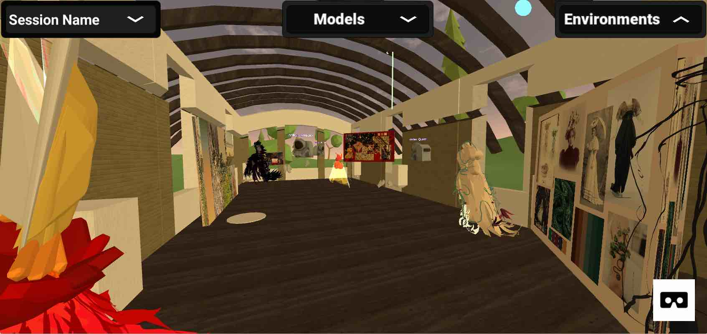

Recent Works
Project Komodo: Open-Source, Higher Education-Focused Social VR Platform

November 2019 – Ongoing.
Project Komodo Platform
About Project Komodo >>Collaborators: Yifan Bao, Elisandro Cabada, Xianzhuo (Patrick) Cao, Mihir Joshi, Nishi Mehta, William Mischo, Dennis Piehl, David Tamayo, Robert Wallace, Xiaohan Yin.
Role: Project Manager, Software Tester, VR and Web Developer
Languages: Unity, C#, JavaScript, HTML, CSS, MySQL, Docker, Traefik
Libraries: Libraries: Vue.js, Vuetify, SocketIO, De-Panther/unity-webxr-export, MozillaReality/unity-webxr-export
Development Tools: Git, GitHub, GitLab
Design Tools: Tilt Brush, Blender
Management Tools: Miro, Trello
Processes: Scrum, User Story Mapping, Manual Testing


Project Komodo + Fashion Illustration Module
Tilt Brush-based module based on the Komodo WebXR platform
Dates: January 2020 – Ongoing.
Client: Professor Chiara Vincenzi
Collaborators: Project Komodo Platform team, CITL at Illinois (Megan Baird, Jamie Nelson, Jim Wentworth)
Role: Software Consultant, 3D Modeler, Environment Artist
Languages: Unity, C#, Blender
Libraries: googlevr/tilt-brush-toolkit


Project Komodo + Microscale Materials Science Module
Teaching module supported by the Komodo Core platform
Dates: January 2020 – Ongoing.
Client: Dr. Andre Schleife.
Collaborators: Project Komodo Platform team
Role: Software Consultant, 3D Modeler
Languages: Unity, C#, Blender
Confidential. Please email me for more details.
IDEA Lab Technical Support
Assisted thirty students with VR and Komodo usage. Set up and post-processed first- and third-person VR headset recordings. Familiar with Quest, Rift (S), WebXR-supporting browsers, such as Oculus Browser, Firefox Reality (Quest), Firefox Reality (PC VR).